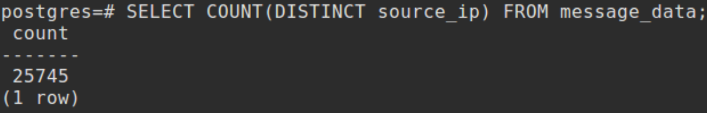
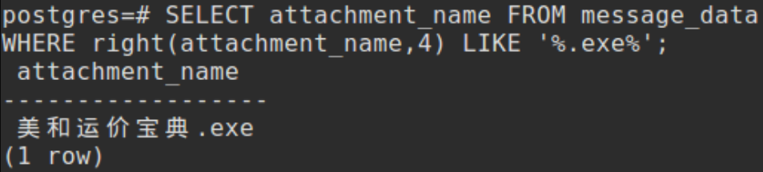

Jason DiMedio
CS373
August 16, 2019
Week 8 Write-Up
Email is a major point of vulnerability, as it is used to infect computers with malware and trick users into providing personal information (e.g. through phishing). Attackers use email by "spamming," which is sending emails with malicious attachments or links indiscriminately. The malicious emails are called spam, while normal email is called ham.
Some organizations use a phishing quiz to assess and educate users within their organization on how to spot spam versus legitimate email. By educating users, it is possible to build a layered defense, the most important layer being the end user. Interestingly, one thing that has come out from these quizzes is that human resources (HR) departments are most likely to to be successfully phished using email. Being custodians of people in the organization's personal information (e.g. names, financial data, social security numbers), the gap in knowledge of what is legitimate versus spam demonstrated by HR personnel is especially concerning.
Spamtraps (or honeypots) are recipients of email wherein it can be assumed that every email is spam. In one example, a new email account is set up but never given out. Because the email address was never used for any legitimate purpose, it can be assumed that all incoming emails are spam. In another example, an email account that has been closed (e.g. by a customer of an ISP) is kept open. After a period of time, it can be assumed that all emails are spam, under the assumption that legitimate senders would have had their emails bounced back and stopped sending.
Many spam emails are sent via botnet, which is a series of machines that have been taken over to perform actions the goal of which is not supported by the user of the machine. These actions might include spamming, harvesting, or mining among other examples.
Snowshoe spam is a technique in which the load of spamming is spread across a broader "footprint." For example, an infected machine that sends spam emails very frequently at a constantly high rate can be immediately identified and blocked. However, machines that send emails somewhat sporadically tend to resemble legitimate senders and are harder to detect.
Spear phishing is an attack that is highly targeted (e.g. focusing on a particular individual based on what information they are known to have access to). In one example, an attacker can use spam to spoof a replyto email address and in so doing inject themselves into a conversation in order to manipulate the target.
Realtime blackhole lists (RBLs) is a list of IP addresses from which spam is known to originate. Connections from IP addresses on the RBL will be dropped before messages can be transmitted.
Heuristics is a technique for identifying spam email by identifying traits of the emails, in varying degrees of complexity, and mapping certain traits or combinations of traits to spam such that emails with those traits can be assumed to be spam. Different features of known spam emails are combined into a single definition. Sometimes features are covered twice, once for a very fast (but extremely specific) identification for certain subject lines for example, and once in a more advanced, generic definition that will identify more than just the exact matches.
Bayesian or statistical methods involve collecting a corpus of spam and ham emails, which are tokenized. The prevalence of each token is then calculated, and spam email can be detected based on probability using the tokens.
Common themes in spam have included the classic prince/princess asking for money scam, Canadian pharmacies selling extremely inexpensive drugs, and pump and dump schemes. One interesting pattern between these waves of spam themes is the tendency for spammers to send out the phishing or scam emails when there is money to be made and to send out malware during times when authorities are cracking down on the known scams. During the latter period, the attackers rebuild their botnets to emerge again with a different scam.
Technology for detecting and blocking spam can be reputation driven (e.g. focused on evaluating reputations of IP addresses, message contents or URLs) or content-driven, which is more focused on finding patterns within the content of the emails themselves. Regular Expression ("RegEx") is a very useful tool for the latter case.
Other tools that are useful for spam detection are domain information groper (DIG), WHOIS and grep, SED and AWK on linux.
Open-source databases are also commonly used, including PostgreSQL and MySQL.
Fig. 1 - PostgreSQL is used to show a table containing exemplary spam/ham message data.
In the illustrated example (of Figs. 1 and 2), PostgreSQL is used to store a corpus of spam/ham email data, including source and destination identifiers, subject line, body, and attachments, among other examples.
Fig. 2 - Exemplary message data stored in the PostgreSQL database.
Another useful tool is regex, which can be used to match patterns in strings in order to identify spam. Regex Coach is a program that enables a user to test different regex patterns to see if they match a sample string. By experimenting with different patterns and strings, users can aid in learning the complicated syntax involved in using regex.
Fig. 3 - Regex Coach is used to test a regular expression (top) against a target string (bottom).
Certain research techniques are used for studying spam. These include parsing or extracting key meta data from email, grouping or limiting the larger corpus of email into logical groups such as emails from one particular window of time, aggregation of relevant values within the data, and identification of outliers, which involves determining, for example, why an email was classified different than expected and hopefully learning something from the outcome.
In the following demonstration, PostgresSQL is used to study a corpus of emails and extract quantitative information based on different queries. Of note is the fact that the corpus contains 100,000 messages. Thus, interacting with the database takes the form of constructing well thought out queries rather than reading through the messages line by line.
Table 1 - Results of Analyzing a Corpus using PostgreSQL
Description | Quantity | postgre input / output |
total records | 100,000 | 
|
total source IPs | 99,986 |
|
total subjects | 100,000 |
|
total attachments | 99,244 |
|
total URLs | 96,877 |
|
distinct source IPs | 25,745 |  |
distinct from domains | 22,994 |
|
distinct subjects | 16,636 |
|
distinct attachments | 76,745 |
|
distinct URLs | 88,146 |
|
average message size | 187560 |
|
average subject length | ~28 |
|
distinct .zip files | 80 |
|
distinct .rar files | 6 |
|
distinct .xlsx files | 340 |
|
distinct .docx files | 554 |
|
distinct .pdf files | 4387 |
|
distinct .exe files | 1 |
|
Finding the final result surprising, I followed up with a query to confirm that there is in fact a single .exe attachment represented in this corpus of 100,000.

Fig. 4 - The corpus of 100,000 messages contains a single .exe attachment.
I also attempted to determine which was the most common file extension present in the URLs. However, I ran into some trouble coming up with a query that would capture this information. However, I did get some good experience using The Regex Coach in my attempts to find this information.
Fig. 5 - The Regex Coach being used to construct a regular expression to search URLs for file extension information.
It is useful to know the normal sequence of an SMTP conversation for both HAM and SPAM mails, the latter of which, once detected, are blocked (e.g. with a 554 error code). Email headers are read from the bottom up and show each hop that is taken by the email from its source to its ultimate destination. One interesting thing to know here is that any data specifying a "from:" field in the data portion of an email will be shown as the "from" address. This is often abused by spammers to show an email being sent from somewhere different than it actually is.
Detecting and blocking spam in many ways relies on perfecting the process of identifying which traits can reliably be attributed to spam versus legitimate email. The growing field of data science is often used to this end.
In "Data Driven," DJ Patil and Hilary Mason define a data scientific method. They propose starting with the data itself and developing intuitions about the data based on presumably an informal review of the data. Next, one should formulate a question (e.g. about which traits might be reliable predictors of spam) and use the current data to better understand if the question is useful. This should be done until a testable hypothesis is formed. Then you experiment using the data and analyze the results to draw insights about the question.